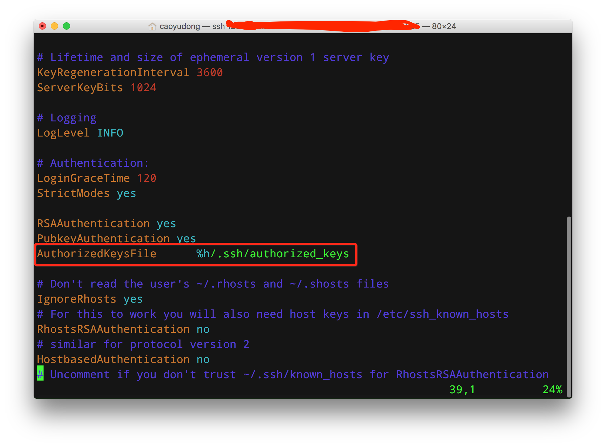
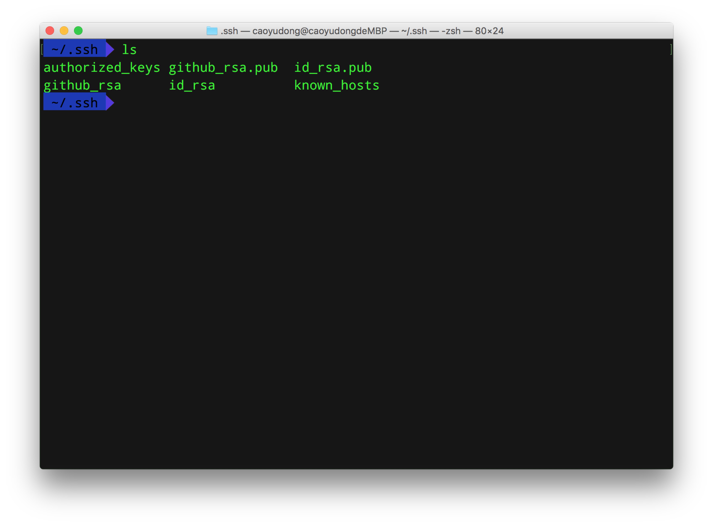

好久没写博客了，因为中间发生了很多事，心情很乱，没有心思写博客，改写日记。。。现在又来了美帝开始读研究生，感觉博客还是要继续写。虽然这写东西并不能称作为博客，因为自己写的几乎就是照搬网上的一些东西，更像是一堆技术笔记。不过管他的，反正除了我自己又没人看……
之前登录阿里云都是像这样：
1 | ssh username@IP |
然后这几天上课，发现教授要求用公钥私钥登录，免去了写密码的步骤，感觉十分方便（虽然是老技术，自己之前也知道，但是从来都没折腾过，所以一直用着密码登录，真是没有一点点求知欲）。
具体操作如下：
创建~/.ssh/autorized_keys文件
我的阿里云用的是Ubuntu，没有~/.ssh/autorized_keys，所以要自己手动创建一个
首先登录到客户端，根目录下：
1 | mkdir ~/.ssh |
给~/.ssh文件夹赋予权限
1 | chmod 700 ~/.ssh |
常用修改权限的命令：
chmod 600 ××× （只有所有者有读和写的权限）
chmod 644 ××× （所有者有读和写的权限，组用户只有读的权限）
chmod 700 ××× （只有所有者有读和写以及执行的权限）
chmod 666 ××× （每个人都有读和写的权限）
chmod 777 ××× （每个人都有读和写以及执行的权限）
然后通过新建一个autorized_keys文件
1 | vim ~/.ssh/autorized_keys |
修改/etc/ssh/sshd_config
通过vim打开/etc/ssh/sshd_config文件
1 | vim /etc/ssh/sshd_config |
取消这一行的注释

然后重启ssh服务
1 | service ssh restart |
添加自己的公钥
公钥可以自己生成一个，然后自己保管好私钥就好。由于我的电脑是Mac，就直接用自己的了。
我的公钥在自己电脑的~/.ssh/目录下，通过SCP命令上传到自己的服务器，注意IP后面有个冒号！！
1 | #本地命令 |

然后回到服务器根目录，通过命令，将公钥添加到 ~/.ssh/authorized_keys文件里
1 | #服务器命令 |
然后就可以直接通过命令登录了，不再需要输入密码。
1 | ssh username@IP |
对于亚马逊云（AWS）的Amazon Linux，这个Linux里面以及有了~/.ssh/authorized_keys文件，无需创建，直接添加公钥就好～
这个学校明明那么有钱，却不给学生租点服务器，要学生自己去租亚马逊云。。。